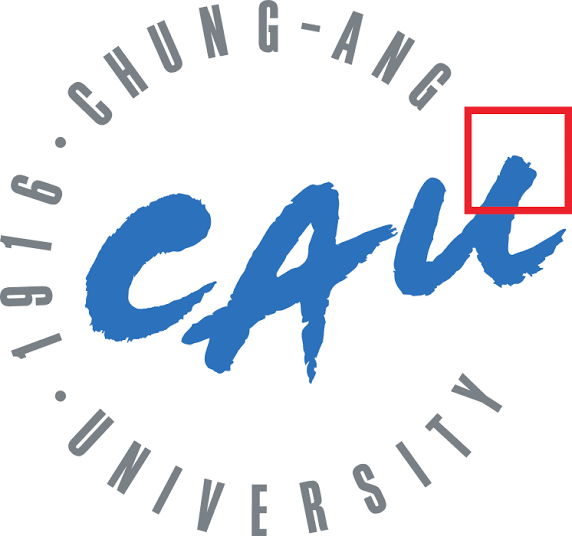

Began research internship at Computer Vision & Machine Learning Lab, KAIST AI.
B.S. Candidate in Artificial Intelligence
Kyuan Oh (오규안)
I am a B.S. candidate in Artificial Intelligence at Chung-Ang University and a research intern at KAIST AI CVML. My research focuses on vision-language-action models, physical grounding, and multimodal intelligence for embodied agents.
My long-term goal is to build omnimodal world models that can perceive, understand, predict, and act reliably in complex physical environments.
News
One paper accepted to ECCV 2026: AnchorPrune.
Began serving as President of Chung-Ang University AI Association (CUAI).
Two papers accepted to ICTC 2025: MEDIATOR and BEV-ConvFusion.
Began research internship at MULTI Lab, Chung-Ang University.
Entered Chung-Ang University as a B.S. student in Artificial Intelligence.
1 / 1
Education

Chung-Ang University
Mar. 2023 – Feb. 2027 (Expected)B.S. Candidate in Artificial Intelligence
GPA: 4.34 / 4.50 · Major GPA: 4.40 / 4.50
Research Experience
Research Interests
Research Fields
- Vision-Language Models
- Vision-Language-Action Models
- 3D Computer Vision
- Omnimodal World Models
Ongoing Research
[1] Representation-Level Adaptation for VLA Models
- Investigating robust fine-tuning strategies that improve generalization beyond overfitted or environment-specific training settings.
Selected Publications
Full Publications* Equal contribution, + Corresponding author
AnchorPrune: Relevance-Anchored Contextual Expansion for Visual Token Pruning
Kyuan Oh, Bumsoo Kim+
The 19th European Conference on Computer Vision, Malmö, Sweden
BEV-ConvFusion: An Efficient 2D Fusion Framework for Real-Time Autonomous Perception
Kyuan Oh, Jaeyoung Yang, Minseong Kang, Kiseong Lee+
The 16th International Conference on ICT Convergence, Jeju Island, South Korea
MEDIATOR: Enhancing Medical Diagnosis via Gated Distillation and Decoupled Learning
Kyuan Oh, Sunguk Lee, Mina Hwang, Heewon Yang, Kiseong Lee+
The 16th International Conference on ICT Convergence, Jeju Island, South Korea
Academic Community
Chung-Ang University AI Association (CUAI)
- PresidentJan. 2026 – Present
- AI GPU Server ManagerJan. 2024 – Feb. 2026
- MemberMar. 2023 – Present
Selected Awards
Full AwardsCUAI Conference Awards
- Best Paper Award (2025 Summer Conference)
- Outstanding Paper Award (2025 Summer Conference)
- Excellence Paper Award (2024 Summer Conference)
- Excellence Paper Award (2024 Winter Conference)
Best Excellence Award
- 2025 Open-Source Software & AI Deep Learning Hackathon
Leaderboard Rank 2 / 940
- 2024 Bio-Resource AI Utilization Contest
Scholarships
Chung-Ang University (6 times)
- Top of the Class ScholarshipSpring 2025, Fall 2025
- Academic Excellence ScholarshipFall 2023, Fall 2024, Spring 2026
- Capacity Building ScholarshipSpring 2023
Contact
Feel free to reach out for research discussions, collaboration opportunities, or questions about my work.